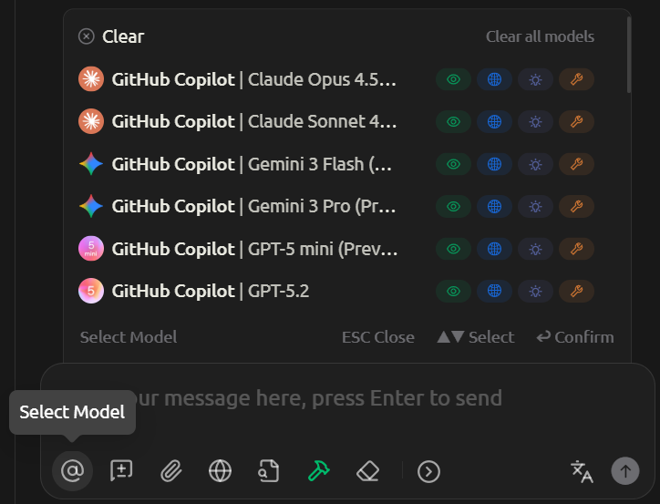
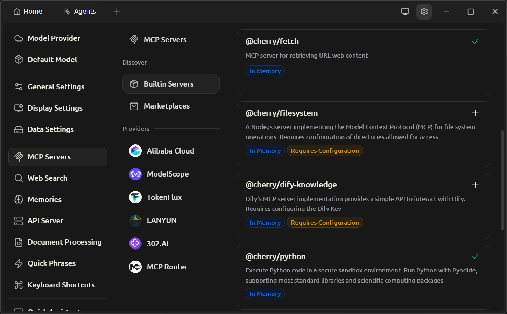
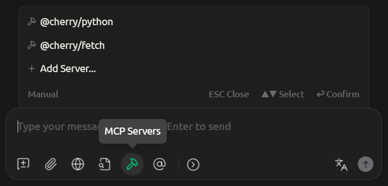
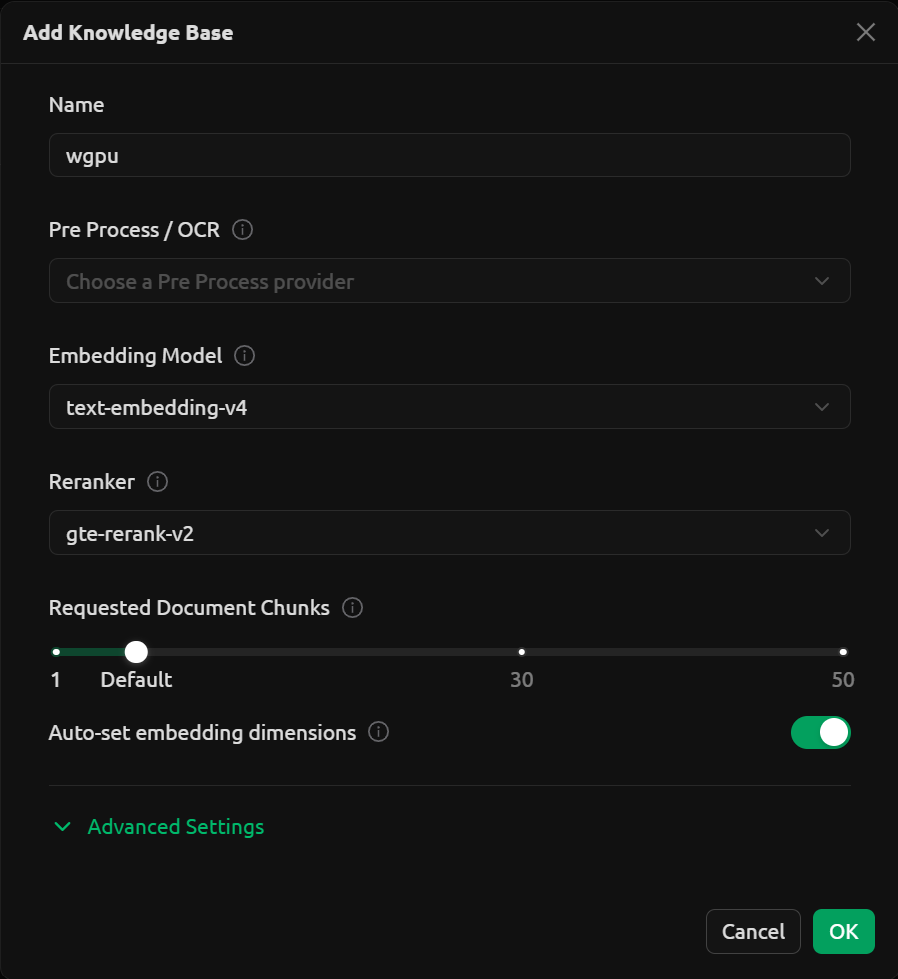
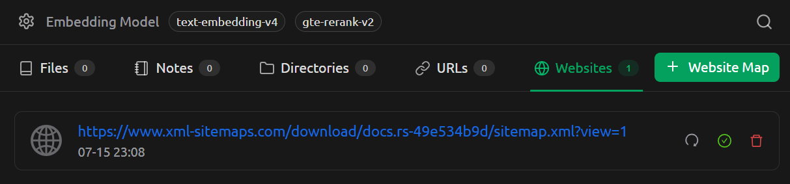

LLM 入门指南¶
大语言模型 (Large Language Model, LLM) 指由具有大量参数 (通常大于 1 B) 的神经网络组成的语言模型.
本文不涉及技术细节, 专门介绍如何使用 LLM, 帮助读者快速上手.
客户端¶
优点¶
-
界面统一: 可以通过统一的界面使用各种 LLM. 通过 API 接入各种 LLM 提供商, 可以访问不同的 LLM.

-
支持 MCP: 部分客户端支持 MCP.
- 参数可调: 可以自定义 Temperature/Top-P/上下文窗口等参数.
- 离线可用: 客户端通常支持运行本地 LLM, 确保离线可用且数据安全.
- 开源透明: 部分 LLM 客户端采用开源许可.
缺点¶
- 需要 API: 会增加使用难度, 并产生额外成本. LLM 提供商的网页版通常可以免费使用, 而 API 则需要付费使用. 不过 API 价格通常较便宜, 而且用途更加广泛 (比如可以让翻译插件接入 LLM).
- 需要配置: 初次使用需要配置 LLM 提供商的 API 密钥, 增加了使用门槛.
- 硬件要求: 运行本地 LLM 需要强大的硬件.
桌面端¶
以下客户端均支持 Windows, Linux 和 macOS:
-
Cherry Studio: 跨平台, 部分开源 (个人使用免费), 支持 MCP, 在线搜索, 图片/文档解析, 知识库, Ollama/LM Studio, GitHub Copilot. (该软件重度依赖 Vibe Coding)
Warning
曾存在遥测功能关闭后依然与后台服务器通讯的致命问题: https://github.com/CherryHQ/cherry-studio/issues/14387.
-
LM Studio: 跨平台, 闭源免费, 仅支持本地 LLM, 界面简洁易用. 支持图片/文档解析, Flash Attention, 提供与 OpenAI API 兼容的本地服务器.
- LobeChat: 跨平台, 部分开源 (个人使用免费), 支持知识库, Ollama.
- Msty: 跨平台, 闭源免费 (提供付费高级版), 同时支持本地或远程 LLM, 支持在线搜索 (效果较差), 图片/文档解析, 知识库, Ollama.
- Jan: 跨平台, 开源 (Apache-2.0).
Cherry Studio 等客户端本身并不支持本地 LLM, 但可以与 LM Studio 或 Ollama 组合使用, 同时支持本地和远程 LLM.
移动端¶
Warning
目前常见手机只能以较慢的速度 (6 tok/sec) 运行 8 B 参数的模型.
以下客户端均支持 Android:
- RikkaHub: 开源 (AGPLv3), 支持 MCP, 在线搜索 (效果极差).
- PocketPal: 开源 (MIT), 仅支持本地 LLM. 支持 Flash Attention.
- MNN Chat: 开源 (Apache-2.0), 仅支持本地 LLM, 支持 iOS (需要自行编译), 支持许多模型 (包括但不限于 Qwen3/DeepSeek), 有会话记录.
- Edge Gallery: 开源 (Apache-2.0), 仅支持本地 LLM, 支持最新的 Gemma 3n 系列模型, 无法保持会话记录.
模型上下文协议¶
模型上下文协议 (Model Context Protocol, MCP) 是一种开源协议1, 旨在以标准化的方式向 LLM 提供上下文信息.
LLM 可以与 MCP 服务器通信, 以扩展其功能.
MCP 服务器有以下部署方式:
- 远程部署：适用于网页爬虫/API 调用等通用功能.
- 本地部署：适用于文件系统访问/本地数据库操作等涉及敏感数据的功能, 确保离线可用且数据安全.
Cherry Studio 提供了一些内置 MCP 服务器, 可以在设置里直接启用.

后续便可通过下面方式在会话中启用 MCP 服务器:

知识库¶
知识库 (Knowledge Base) 是一种存储和检索信息的系统, 旨在向 LLM 提供新的/专有的上下文信息.
下面将说明如何利用检索增强生成 (Retrieval-Augmented Generation, RAG) 检索知识库, 并最终引导 LLM 输出回答.
RAG 一共有以下三个关键阶段:
- 检索 (Retrieval): 将用户查询内容通过嵌入模型转为查询向量, 然后从向量数据库中检索相关文本片段.
- 增强 (Augmentation): 将查询后得到的相关文本片段与用户查询内容进行合并, 得到增强的查询内容.
- 生成 (Generation): LLM 根据增强后的查询内容生成最终的结果.
flowchart LR
subgraph 检索阶段
QV[查询向量] -->|相似度匹配| VDB[(向量数据库)]
end
subgraph 增强阶段
VDB -->|Top-K| RC[相关上下文]
RC -->|上下文注入| AQ[增强后的查询]
end
subgraph 生成阶段
AQ --> G[LLM]
end
UQ[用户查询] -->|嵌入模型| QV
UQ --> AQ
G --> R[响应结果]- RAG 检索阶段的各种方式类似传统的搜索引擎, 但其基于向量化技术, 具备语义检索能力.
- RAG 的本质依然是 "按需检索", 只会根据用户输入查询相关数据, 无法对知识库进行全面总结.
-
RAG 可以从大量数据中提取相关信息.
以 Cherry Studio 的 Web Search 工具为例, 其可以爬取大量网页内容, 创建一个临时知识库, 仅筛选出相关信息供 LLM 参考.
该功能可以使得网页搜索覆盖更多的搜索结果, 并提高内容的相关性. 显著提高了 LLM 回答的质量.
除了生成回答的 LLM, RAG 还需要借助两种模型:
- 嵌入模型 (Embedding Model): 将文本转换为向量表示, 用于生成向量数据库. 比如 Qwen3 Embedding (
text-embedding-v4). - 重排序模型 (Re-ranking Model): 对检索到的文本进行排序, 以提高相关性. 比如 Qwen3 Reranker (
gte-rerank-v2).
其中重排序模型是可选的, 但可以显著提高检索结果的质量.
下面将以 Cherry Studio 为例, 描述如何创建一个关于 wgpu 的知识库:

其中 "Requested Document Chunks" 可以理解为搜索返回相关文本片段数, 这些片段一般被称为块 (Chunk). 该值过大可能导致过度检索, 无关信息过多, 反而降低生成质量.
找到 wgpu 的文档网站首页后, 通过 https://www.xml-sitemaps.com 等工具生成 Sitemap, 里面包含了该网页下所有子页面的 URL. 然后将 Sitemap 的 URL 添加到 Cherry Studio 中.

稍等片刻后即可看到绿色对勾, 表示向量数据库创建成功. 此时知识库已准备就绪, 可以在对话中启用.
本地 LLM¶
内存需求¶
下面表格提供大概的参考值, 实际情况视具体模型而定.
| 参数规模/量化级别 | FP16 | Q8 | Q4 | Q2 |
|---|---|---|---|---|
| 7 B | ~16 GiB | ~8 GiB | ~4 GiB | ~2 GiB |
| 8 B | ~18 GiB | ~9 GiB | ~5 GiB | ~3 GiB |
| 13 B | ~29 GiB | ~15 GiB | ~7 GiB | ~4 GiB |
| 30 B | ~67 GiB | ~34 GiB | ~17 GiB | ~9 GiB |
| 70 B | ~156 GiB | ~78 GiB | ~39 GiB | ~20 GiB |
Info
上表数据仅供参考, 实际内存占用率还取决于上下文窗口等参数.
Info
LM Studio 会预估模型带来的负载, 在下载前尽量选择 Full GPU Offload Possible 的, 这样可以将模型完整的加载进显存, 使得推理 (Inference) 效率最大化. Partial GPU Offload Possible 的通常可以运行, 但是效率会显著降低. 值得注意的是, 与模型进行对话也会增加内存使用量, 所以并非能加载就能正常使用.
量化级别¶
下面表格提供大概的参考值, 实际情况视具体模型和硬件而定.
| 量化级别 | 质量 | 速度 | 内存占用 | 适用场景 |
|---|---|---|---|---|
| FP16 | 最高 | 慢 | 最大 | 对质量要求极高 |
| Q8 | 很高 | 较慢 | 大 | 平衡质量和性能 |
| Q4 | 良好 | 快 | 中等 | 最佳平衡点 |
| Q2 | 一般 | 最快 | 最小 | 硬件受限场景 |
以 DeepSeek-R1-0528-Qwen3-8B 为例, 其参数量为 8 B, 量化为 Q4_K_M.
通过上表可以推测出所需内存大概为 5 GiB, 实际显存使用量为 5.3 GiB.
Info
LM Studio 会自动根据硬件评估合适的量化版本, 一般使用默认的即可.
推荐模型¶
- gemma-4-e4b: 支持多模态/混合推理, 43 tok/sec, 约 5.2 GiB 内存占用.2
- qwen3.5-9b: 支持多模态/混合推理 (Reasoning), 23 tok/sec, 约 5.5 GiB 内存占用.
- granite-4-h-tiny: 推理效率高 (激活参数 1 B) 且内存占用低, 64 tok/sec, 4.7 GiB 内存占用.3
测试 GPU: NVIDIA GeForce RTX 4060 Laptop GPU (8 GiB 显存).
若使用 PocketPal, 建议启用 Flash Attention, 以获得更快的推理速度和更大的上下文窗口.
编程智能体¶
-
Claude Code
安装方式请参考官方文档.
配置第三方 API 端点, 以 DeepSeek 为例:
环境变量 值 ANTHROPIC_BASE_URLhttps://api.deepseek.com/anthropicANTHROPIC_AUTH_TOKEN<DEEPSEEK_API_KEY>ANTHROPIC_MODELdeepseek-v4-pro[1m]ANTHROPIC_DEFAULT_HAIKU_MODELdeepseek-v4-flash[1m]CLAUDE_CODE_DISABLE_NONESSENTIAL_TRAFFIC1 -
Codex
安装:
npm install -g @openai/codex.配置第三方 API 端点, 以 OpenRouter (
deepseek/deepseek-v4-pro) 为例: -
Gemini CLI
安装:
npm install -g @google/gemini-cli.
参数¶
温度 (Temperature)¶
控制模型输出的随机性和创造性.
- 低温度: 模型倾向于选择概率最高的词, 输出更确定.
- 高温度: 增加低概率词被选中的机会, 输出更随机. 过高的温度可能导致输出内容不连贯 (逻辑性弱).
| 使用案例 | 温度 |
|---|---|
| 代码生成/数学解题 | 0.0 |
| 数据抽取/分析 | 1.0 |
| 通用对话 | 1.3 |
| 翻译 | 1.3 |
| 创意类写作/诗歌创作 | 1.5 |
如果使用的是推理模型, 可以适当降低温度 (如 \(0.6\) 4).
对于编码/数学类任务, 为了提高逻辑性和质量, 应该将温度设为 \(0\), 使其总是选择概率最高的词.
核采样 (Top-P)¶
影响模型考虑的候选词范围.
- 低核采样: 只考虑最可能的少数词. 输出容易理解.
- 高核采样: 考虑更多可能的词选择. 输出词汇更加丰富多样.
词元 (Token)¶
词元是 LLM 处理文本的基本单位5, 也是 API 计费使用到的单位. 其与自然语言文本的换算关系大致为:
- 1 个英文字符 \(\approx\) 0.3 词元.
- 1 个中文字符 \(\approx\) 0.6 词元.
部分 LLM 客户端会显示精确的词元数, 方便用户计算对话消耗的费用. 如果需要自行计算词元数量, 则需要使用到相应模型的分词器 (tokenizer)6.
供应商¶
受支持最广泛的 API 格式为 OpenAI API, 除此之外还有 Gemini API 和 Anthropic API.
下面 LLM 供应商均支持 OpenAI API 格式接口:
- DeepSeek: 价格.
- OpenAI: 必须使用电话号码注册. 价格.
- OpenRouter.
- SiliconFlow: 必须使用电话号码注册. 有几个 7-9 B 的免费模型, 但是速率限制非常严格, 难以用于网页翻译.
- GitHub Models: GitHub 提供限制较严格的免费试用, 实际供应商为 Azure AI.
未审查模型¶
通常 LLM 模型都是经过审查的, 会拒绝回答部分问题 (比如涉及违法的内容). 未审查 (uncensored) 模型则不会或很少拒绝回答.
可以通过 abliterated 和 uncensored 关键字检索未审查模型.
详情请参考 remove-refusals-with-transformers.
参见¶
参考¶
- https://en.wikipedia.org/wiki/Retrieval-augmented_generation.
- https://api-docs.deepseek.com/quick_start/token_usage.
-
由 Anthropic 公司于 2024 年 11 月提出. ↩
-
https://blog.google/innovation-and-ai/technology/developers-tools/gemma-4/ ↩
-
https://www.ibm.com/new/announcements/ibm-granite-4-0-hyper-efficient-high-performance-hybrid-models ↩
-
https://huggingface.co/deepseek-ai/DeepSeek-R1-0528-Qwen3-8B#temperature ↩
-
可以理解为 LLM 所使用语言的词, 该语言非任何人类语言. ↩
-
不同模型的分词器并不相同. ↩